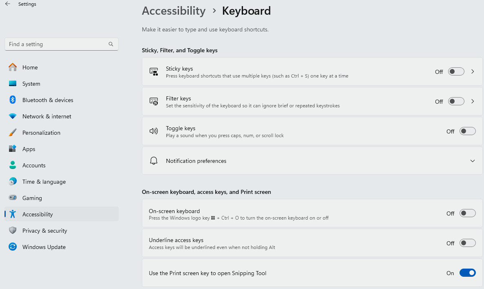

On-Screen Keyboard
Scenario
You want to disable the On-Screen Keyboard on the Desigo CCstation monitor. In the Windows Settings pages, you need to ensure that the On-Screen Keyboard option is set to Off.
Turn Off On-Screen Keyboard
- In Settings, go to Accessibility > Keyboard
- Set On-screen keyboard to Off.
NOTE: In Windows 11 Settings, the Time & Language > Typing page contains an additional subset of advanced keyboard options, which might be useful in specific cases.
Refer to Windows 11 documentation.
